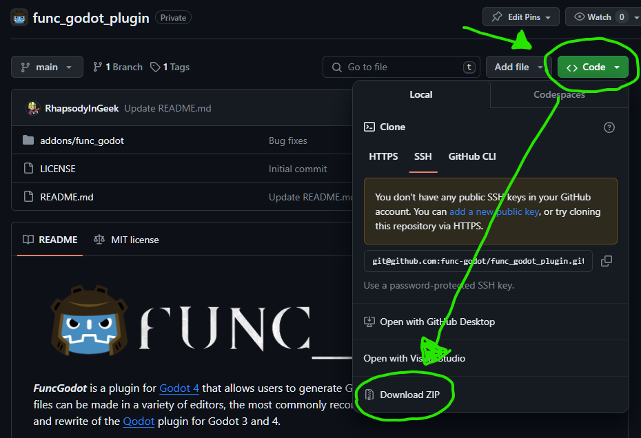
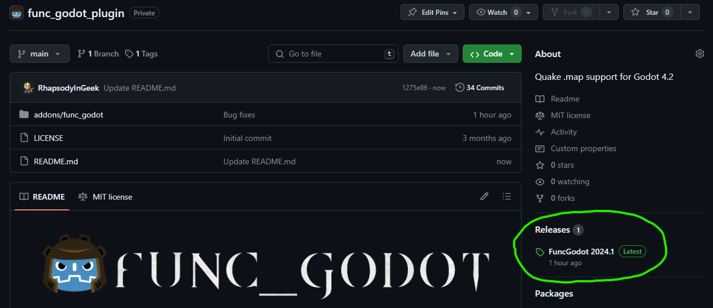

Installing FuncGodot
Preliminary Requirements
FuncGodot's official requirement is always the latest Godot 4.x release. If you manage to make it work on an older release of Godot 4, awesome! But you're on your own if you run into issues.
FuncGodot is written in pure GDScript and as such has no other dependencies.
This manual assumes you have an intermediate level of knowledge with Godot and your chosen map editor.
Map Editor Compatibility
FuncGodot directly supports the following editors with configuration resources:
- TrenchBroom 2024
- NetRadiant Custom 1.6
FGD outputs have also been tested with these editors:
- J.A.C.K.
FuncGodot is designed to be as map editor agnostic as possible. If you use an editor that can output Quake or Half-Life 1 format map files, please let us know on GitHub or Discord so we can try our best to either support it directly or document the configuration process!
Downloading the Plugin
There are 3 places to download FuncGodot. The first two places are both found on the FuncGodot GitHub Repository. The first location is the Code Download, and it is always the most up to date version of the plugin. It includes all merges, including both feature updates and bug fixes. Sometimes this version can be significantly up to date, but may also contain less refined features than the other options below.

The second location is the GitHub repository's Releases. This is the second most up to date download and is considered the official "Stable Release" of the plugin.

The final location is the Godot Asset Library. While the intent is to keep the Asset Library release in line with the GitHub Stable Release, sometimes these releases can be "desynced" for one reason or another. We're a small team of volunteers here, so please be patient with us!
Our intent is to keep the Stable Releases as reliable as possible, so typically only critical fixes will be pushed with some urgency while new features or quality of life improvements tend to simmer a bit more in the code base.
In any case, pick the download option that suits you best. If you downloaded the plugin from GitHub, extract the func_godot folder to your Godot project's addons folder. If you downloaded from the Asset Library, it should do this for you automatically. Once the plugin is copied to your project, remember to enable the plugin in your Project Settings.